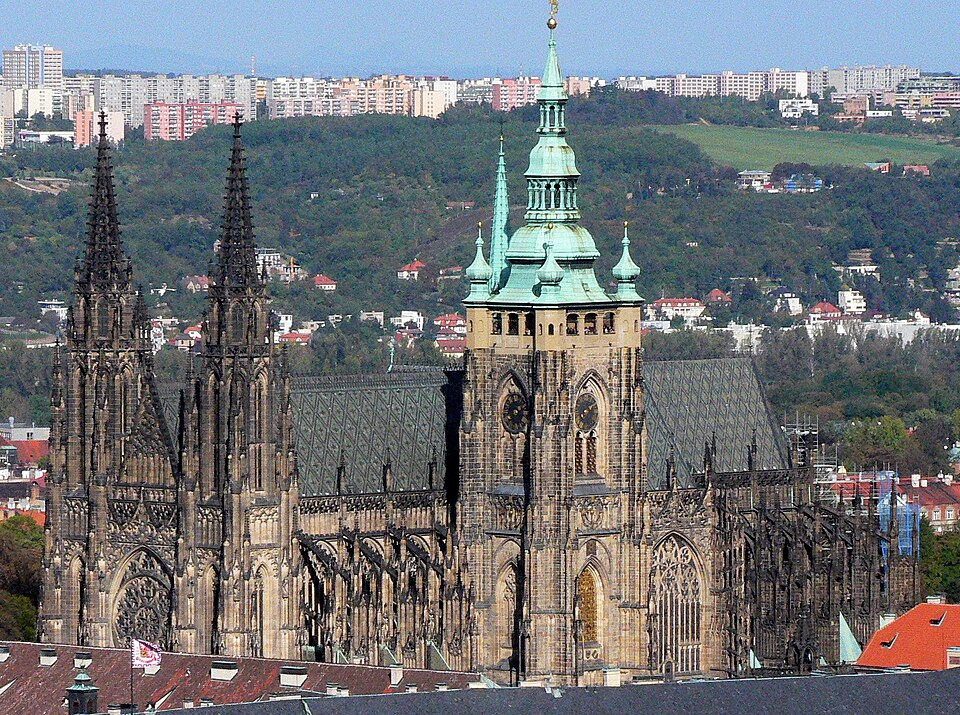
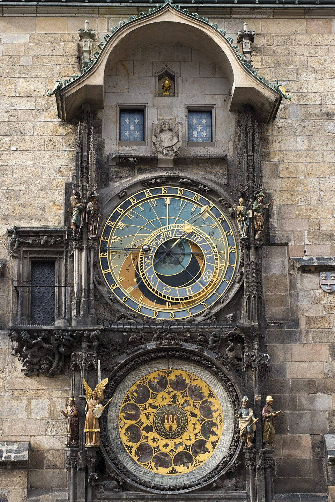

Thu 14 May — Arrival Day
Landing 13:00 PRG | EK139 | Settle in Old Town
13:00
✈️Arrive PRG Airport
Bolt to Kozi 917/3 in Old Town. CZK 700-900, ~25 min. Much easier than bus+metro with luggage, toddler & seniors.
Tip: Install Bolt app before flight. Works in all 5 cities.
15:00
🏠Check-in AirBnB
Kozi 917/3, Praha 1. Host Klara. Freshen up and rest.
Key: Under 5 & over 65 = FREE public transport + most attractions. Carry passport at all times.
17:30
🕰️Old Town Sq & Astronomical Clock
2 min walk from stay. Clock chimes every hour till 21:00. Built 1410 — world's oldest working astronomical clock. Watch the 12 Apostles procession in the upper windows.


19:00
🍽️Dinner — Maitrea
Tynska ulicka 6/1064. FULLY VEGETARIAN. Veg svickova, veg goulash, mushroom pierogi. CZK 250-350/pp. Reserve at maitrea.cz.
21:00
😴Sleep Early
Jet lag recovery. Dim lights from 20:30 for Nived.
Fri 15 May — Sunrise Bridge + Petrin
Charles Bridge dawn | Havelska Market | Petrin funicular | U Prince sunset
06:30
🌅Charles Bridge Sunrise
Empty before 8AM — magical at dawn. Walk: Stay → Old Town Sq → Charles Bridge → Kampa Island → Lennon Wall → back. 90 min. 30 baroque saint statues line the bridge, built 1357-1402.
Why early? By 10AM it's a tourist conveyor belt. Pre-8AM you'll have it to yourselves.

08:30
☕Breakfast — Globe Cafe
Pstrossova 6. Eggs Benedict, omelets, pancakes. Full veg+egg English menu, kid chairs. CZK 200-300/pp.
10:30
⛪Old Town Sq + Tyn Church + Havelska Market
Tyn Church interior free — stunning Gothic twin spires from 1365. Havelska Market for souvenirs. CASH ONLY — best prices in Prague.
12:00
🥗Lunch — Lehka Hlava (Clear Head)
Borsov 2/280. Famous veg restaurant. Leek risotto, veg curry, ginger lemonade. Iconic 'starry ceiling' room.
RESERVE at lehkahlava.cz — books out daily.
14:00
💤Toddler Nap
Back to stay. Day 1 = jet lag day. Don't skip the nap.
16:00
🚂Petrin Hill — Funicular + Mirror Maze
Funicular from Ujezd (PID pass). Mirror Maze CZK 110 (kids love warped mirrors). Petrin Tower CZK 180 (mini Eiffel, 299 steps — skip with seniors). Beautiful hilltop gardens.
Check: Funicular may be closed for renovation in 2026. Verify before going.
Ice cream: Angelato near Ujezd. Unique flavors: lavender, nettle, olive.
17:30
🍺Strahov Monastery Brewery
40 min beer stop. Unique St. Norbert beers — brewed since 1628. Amber & Dark Lager.
18:30
🌇Dinner — U Prince Rooftop
Overlooking Old Town Sq at sunset. Grilled veg, goat cheese, mushroom risotto. CZK 800-1200/pp.
MUST RESERVE for rooftop at theprincecollection.cz — default = basement.
Sat 16 May — Castle + Vysehrad + Letna
Prague Castle morning | Vysehrad fortress | Letna beer garden sunset
07:30
🍳Breakfast at Stay
Groceries from Albert (Palladium, 5 min). Need to be at Castle by 09:30.
08:30
🚋Tram 22 to Castle
Malostranska → 'Prazsky hrad' stop (NOT Pohorelec). 12 min, PID pass.
09:00
🏰Prague Castle — Circuit A
World's largest ancient castle (70,000 sq m). Order: Old Royal Palace (30m) → St Vitus Cathedral (45m, 600 years to build) → St George Basilica (15m) → Golden Lane (30m, Kafka lived at #22, kids love the tiny cottages).
BOOK at hrad.cz — CZK 450/adult, CZK 300 concession. Time slots in May peak.
Skip: Great South Tower (287 steps) — not for seniors.
12:00
🧀Lunch — Lokal Dlouha
Dlouha 33. Smazeny syr (fried cheese) — THE Czech veg dish. Egg-coated breaded Edam with tartar. CZK 400-500/pp.
13:30
💤Toddler Nap
15:00
🏛️Vysehrad Fortress
10th century hilltop fortress. Panoramic Vltava views. Free grounds. Famous cemetery (Dvorak, Smetana). Less crowded than Castle. 90 min.
17:00
🍺Letna Park Beer Garden
THE local park — best panoramic view of Prague. All bridges, Castle across the river. Beer garden + playground slide for Nived. Giant Metronome. Free.
19:00
🍛Indian Dinner
MASALA or ROYAL INDIAN near Old Town. Comfort food night.
Sun 17 May — Zoo + Picnic + Jewish Quarter
Prague Zoo morning | Strelecky Island picnic | Jewish Quarter | Last evening
08:00
☕Breakfast — Cafe Louvre
Narodni 22. Historic art-deco cafe — Einstein & Kafka were regulars. CZK 200-300/pp.
10:00
🦁Prague Zoo + Chairlift
Ranked #4 globally. Indonesian Jungle, Gorillas, chairlift to upper section. 3 hrs. Stroller-friendly.
BUY ONLINE at zoopraha.cz — CZK 300/adult, 200/child, free under 3.
13:30
🏝️Strelecky Island Picnic
Beautiful Vltava island with Charles Bridge views. Grab picnic supplies from Albert. Peaceful, shaded. Free.
17:00
✡️Jewish Quarter Walk
Sunday exteriors: Old-New Synagogue (oldest active in Europe, 1270), Pinkas, Spanish Synagogue, Parizska Street. 90 min.

18:30
🥨Wenceslas Sq + Trdelnik
15 min walk-through. Grab trdelnik (chimney cake) from stalls.
19:00
🍛Dinner — Wolt to Stay
Order in. Pack for early train. Sleep by 20:30.
Mon 18 May — Departure to Krakow
Leo Express 08:23 | 6 hour train
🚂 Prague → Krakow
Leo Express LE411-PL — Praha hl.n 08:23 → Krakow Glowny 14:22 (5h 59m)
Carriage 4, Seats 136/137/140/141/144 — BOOKED
Order food via Leo Express app to seat.
06:30
⏰Wake & Pack
Leave stay by 07:30. Bolt to Praha Hlavni Nadrazi, CZK 200.
08:23
🚂Train Departs
6 hour journey through Moravia into Poland.
14:22
🏁Arrive Krakow
→ Continue to Krakow section for evening plan.
Prague Practical Info
Transport, shopping, supermarkets
🚋 Transport
Transit Pass72hr PID pass CZK 330/adult. Free <15 & >65. Buy at PRG airport kiosk.
PID AppBest for Prague transport. Real-time tracking.
Bolt/UberCZK 100-200 per ride.
CurrencyCZK (Czech Koruna)
🛒 Supermarkets near Stay
Albert (Palladium) — 5 min | 7:00-22:00 daily
Billa V Celnici — 7 min | 7:00-23:00
🛍️ Shopping
Becherovka (0.5L)
CZK 350
Any supermarket
Marlenka Honey Cake
CZK 280
Tesco / Albert
🍺 Must-Try Drinks
- Pilsner Urquell — the original pilsner
- Kozel Dark — rich Czech dark lager
- St. Norbert — Strahov Monastery exclusive
📱 Key Info
- Stay: Kozi 917/3, Host Klara +420 777 573 735
- Confirmation: HMTWESZSHZ
- Prague tourist pass — NOT worth it
- Carry cash for markets